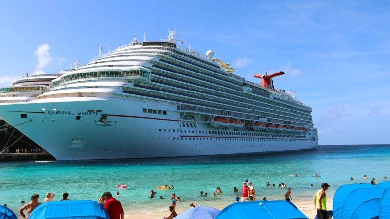

As millions of guests' vacation with Carnival every year, we are "The World's Most Popular Cruise Line". With 24 ships in its fleet, 20 departure ports across the United States, and two to 15-day cruises to The Bahamas, the Caribbean, Mexico, Canada, New England, Alaska, Hawaii, Bermuda, Europe, and Australia....Carnival has a cruise for everyone!

Where else can you ride a roller coaster in the middle of the ocean? Where else can you to a "Dive-In" movie? Where else can you play mini-golf and then cool off in not one, but TWO pools?

Carnival...............that's where!
NBA Champion, Shaquille O'Neal, is the new CFO of Carnival Cruise Lines! In this case, CFO stands for "Chief Fun Officer."
Persuasion Theory
A positive emotional appeal, showing how good the traveler will feel if they book with Carnival is imperative and Audience B would receive the message based on their involvement in the emotional aspect of the "fun" purchase. Using the peripheral route, Audience B employs the simple decision rule of "fun" to evaluate the advocated position of "travel".
Target Audience
Audience B is a young demographic, falling between the ages of 21 and 44, they are primarily single, but travel as a group and have an individual average income of $40,000 or less. Geographic location is relevant for this audience, as they would live within driving distance of one of Carnival's departure ports, therefore they would not include people who reside in the central portion of the United States.
The Design of this Page
With the use of peripheral processing, the design focus of this page is more on imagery and less on worded messaging. Images of sun, fun, and a carefree experience are repeated throughout to create a "fun" digital story.
Back to Top
Copyright © 2020 · All Rights Reserved · My Website